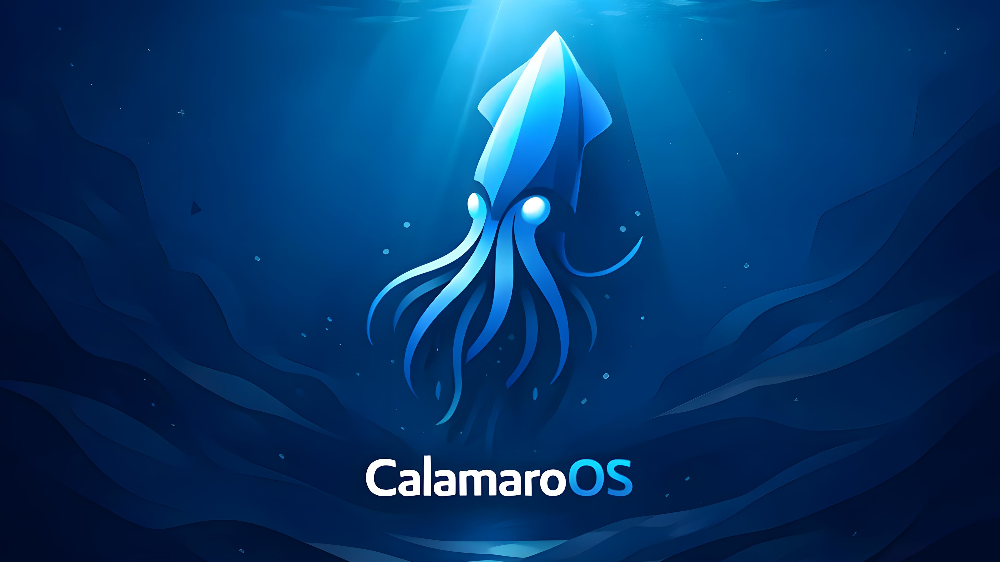

CalamaroOS porta la potenza di Gentoo a tutti. Il nostro obiettivo è permetterti di imparare a dominare la migliore distribuzione Linux, partendo da un'installazione semplificata con Calamares, restando fedeli al cuore Gentoo.
SCARICA ISO UNIVERSALEUtilizziamo i pacchetti binari ufficiali. Se non presenti, il sistema compila dai sorgenti automaticamente sul tuo hardware.
Profilo desktop-systemd ottimizzato. Un ambiente moderno, fluido e pronto all'uso senza configurazioni manuali estenuanti.
Un'unica immagine pronta per ogni hardware a 64-bit. Installa Gentoo in pochi minuti grazie all'interfaccia grafica di Calamares.